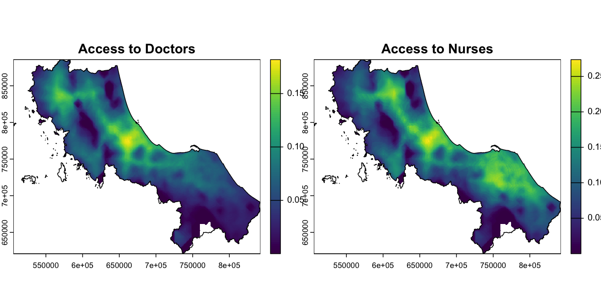

spax is an R package designed for advanced spatial accessibility analysis, focusing on Two-Step Floating Catchment Area (2SFCA) methods and their derivatives. The package offers a fresh perspective on spatial accessibility through its raster-based computational approach and modular design.
Features
- Computational Simplicity: Raster-based operations translate complex spatial relationships into simple matrix calculations
- Modular Design: Functions work like LEGO bricks - mix and match components to build custom analysis workflows
- Complex Demand Handling: Support for continuous population surfaces, letting you work with high-resolution demand data
- Monte Carlo Integration: Built-in tools for uncertainty analysis and stochastic demand modeling
Installation
You can install the development version of spax from GitHub with:
# install.packages("pak")
pak::pak("Songyosr/spax")Example
Here’s how spax’s modular design works in practice, analyzing healthcare accessibility in Thailand’s Region 12:
library(spax)
library(terra)
#> terra 1.8.5
library(sf)
#> Linking to GEOS 3.11.0, GDAL 3.5.3, PROJ 9.1.0; sf_use_s2() is TRUE
# Load example data (already included in package)
pop <- rast(u5pd) # Under-5 population density
hospitals <- hc12_hos # Hospital locations and capacity
distance <- rast(hos_iscr) # Travel time to hospitals
# Calculate accessibility using Enhanced 2SFCA
accessibility <- spax_e2sfca(
demand = pop, # Population density
supply = hospitals |> st_drop_geometry(), # Hospital capacity
distance = distance, # Travel times
decay_params = list(
method = "gaussian",
sigma = 30 # 30-minute characteristic distance
),
demand_normalize = "standard", # Prevent demand inflation
id_col = "id",
supply_cols = c("s_doc", "s_nurse") # Analyze both doctors and nurses
)
# Plot results
plot(accessibility,
main = c("Access to Doctors", "Access to Nurses"))
plot(vect(bound0), add = TRUE)
This example demonstrates key features of spax:
Working with continuous population surfaces (demand)
Handling multiple supply indicators simultaneously
Gaussian distance decay for more realistic accessibility modeling
Getting Started
Check out our vignettes for detailed guidance:
Getting Started with spax: Learn the basics through a healthcare case study
Data Preparation Guide: Understanding trade-offs and practical considerations